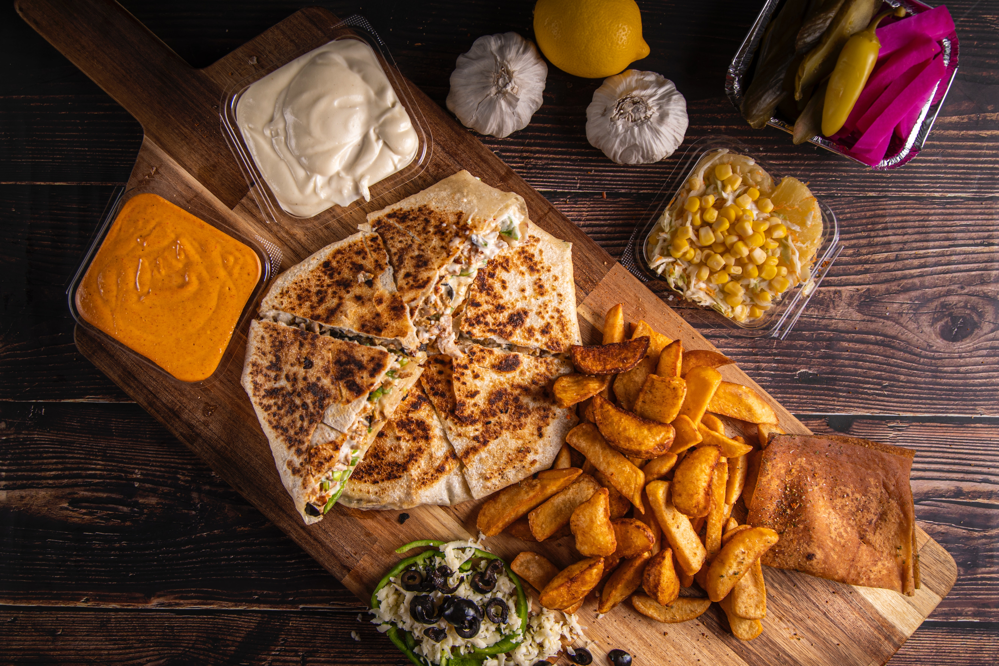
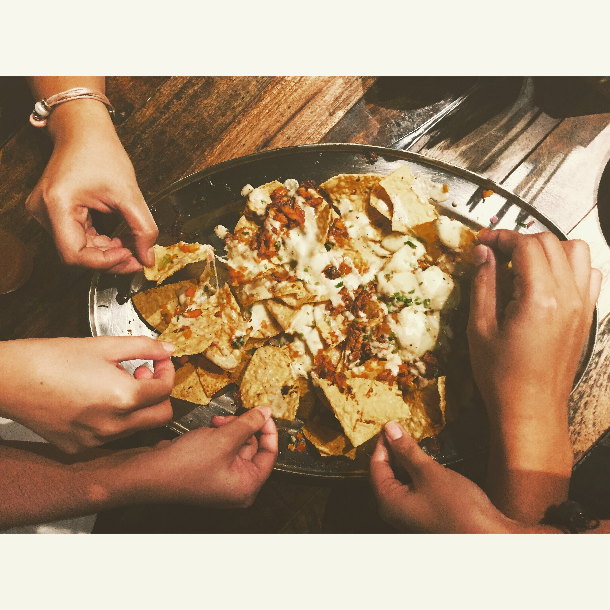

Use of a mark in Bootstrap/b>
Use Ctrl + p to open the print dialog box
A sandwich is any dish in which bread acts as a container or wrapper for another food type and commonly includes veggies, sliced cheese, or sliced meat that is placed on or between slices of bread.

A quesadilla is a Mexican dish consisting of a tortilla that is filled primarily with cheese, and sometimes meats, spices, and other fillings, and then cooked on a griddle or stove.
Nachos is a Mexican culinary dish consisting of tortilla chips or totopos covered with cheese or cheese sauce, as well as a variety of other toppings and garnishes, often including meats, vegetables, and condiments such as salsa, guacamole, or sour cream.
the combo became popular in WWII when franchised fast food establishments dealt with wartime meat rationing and used fries to pad out their meals.